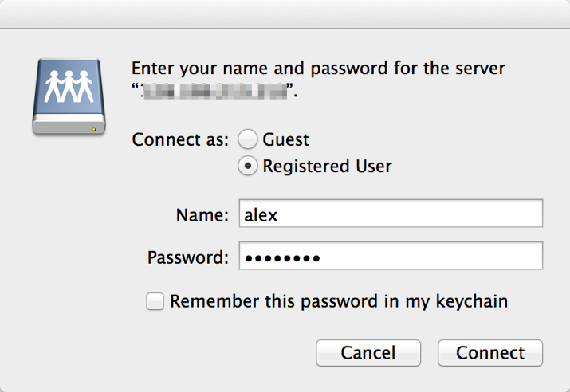
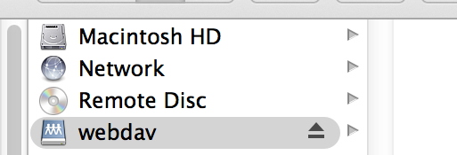
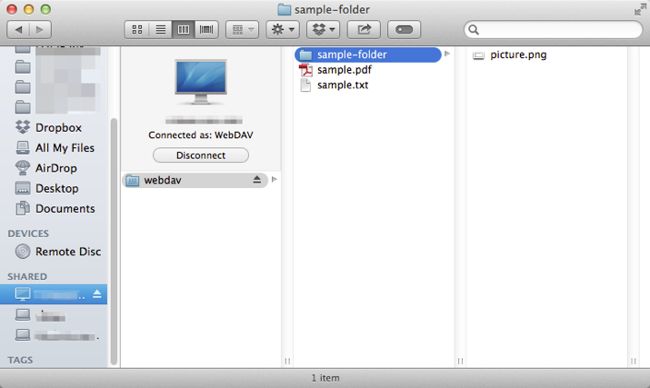

Mac¶
On a Mac, open Finder. On the menu bar, find Go and select the option Connect to Server.

Enter the server address and press Connect.

You will be prompted for a username and password. Enter one of the users we created on the server and press Connect.
Once you have connected, the directory should appear in Finder.
You can copy and save files to the webdav directory, and create subdirectories. Here is the initial state of the directory on the server:

You can add or rename files and create new directories exactly as normal with Finder. Below is the end result.
